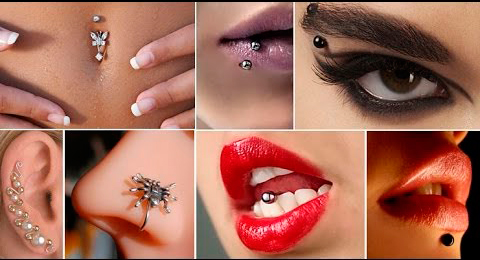

У нас работают высококвалифицированные врачи - практики высшей категории,
кандидаты и доктора медицинских наук следующих специальностей:
- урология
- гастроэнтерология
- андрология
- гепатология
- сексология
- эндокринология
- дерматология
- неврология
- гинекология
- хирургия
- терапия
- пульмонология
- кардиология
- вертебрология
- ЛОР
-заболевания
а также специалисты по нетрадиционным методам лечения и косметологии, иммунокоррекции и детоксикации.
В нашем центре проводится забор крови (биологического материала)
для проведения теста ДНК и:
- анализа на отцовство
- неинвазивный дородовой тест на отцовство
- определение пола на ранних сроках
- ДНК-профиль
- биометрическое тестирование
- анализы на хромосомные отклонения
- анализы для суда и посольств
- тест на измену
- анализы на происхождение
- ветеринарные тесты ДНК
Серьги - это универсальное украшение, внешний вид которых может быть самым разнообразным, но в целом - это модный аксессуар. С давних пор серьги являются украшением, причем как для женщин, так и для мужчин. Наши дети не исключение, они хотят быть похожими на нас и мы можем им в этом помочь. Красивые серьги станут первым украшением вашего ребенка, которое не останется незамеченным.
Прокалывание ушей в Одессе

Мы предлагаем Вам процедуру прокалывания ушей в медицинском центре «Арника», которая осуществляется с помощью, так называемого «пистолета» - специального аппарата, предназначенного для быстрого, стерильного и безболезненного прокалывания ушей. В работе используются серьги-иглы, которые имеют современный дизайн, поэтому в дальнейшем могут быть использованы как обычное украшение. Они изготовлены из высококачественной хирургической стали (с позолотой или без). Мы предлогаем Вам широкий выбор сережек.
Стоимость процедуры (включая сережки) 300 грн.
В центре разработано несколько НОУ-ХАУ:
Эхосинусоскопия - ультрозвуковая диагностика гайморовых пазух у взрослых и детей, на основе ультразвукового сканирования, в отличие от общепринятой методики (проколов и рентгена) безопасно и безболезненно.
Детоксикация и имуннокоррекция - лечение с использованием новейших разработок медицинской науки: озонотерапия, сорбционные технологии и другие "экологически чистые" методы очищения организма, гомеопатическая антигомотоксикология.
Допплеровские исследования: - допплеровское исследование сосудов головы и шеи, верхних и нижних конечностей;
- допплеровское исследование сосудов внутренних органов;
- ультрозвуковая допплерография сосудов головного мозга и шеи, верхних и нижних конечностей;
HiTop-терапия - высокотоновая терапия
Используется:
- для снятия боли;
- артрозах колена;
- заболеваниях суставов;
- болях в плече;
- болях в спине;
- головных боли;
- открытых ран;
- хронических заболеваниях;
- помогает при перегрузках и стрессах.
Принцип высокотоновой терапии: высокие частоты между 4096 и 32768 Герц изменяют биохимические и биоэлектрические процессы в клетке. Это приводит к увеличению количества и объема митохондрий, так называемых "электростанций" клеток. Увеличение митохондрий способствует усилению кооперации и коммуникации между клетками и активизирует энергитический потенциал клеток. После окончания терапии пациент ощущает бодрящее чувство как после пробежки. Усиливается обмен веществ. Пациент чувствует прилив жизненных сил и одновременно приятное расслабление. Главным преимуществом высокотоновой терапии является намного более эфективный метод облегчения болей, особенно хронических и трудно лечимых, чем обычные методы, включая фармакологические. Преимущество перед фармакотерапией-исчезает токсикологичесое воздействие на организм. Не нарушается обмен веществ у пациента. Возможно значительное уменьшение или полное прекращение приема лекарств. Высокотоновая терапия нормализует регуляторные процессы в организме и заряжает клетки энергией. Пригодна для лечения целого ряда заболеваний, в том числе суставов, как например, артрозов, особенно артроза колена, болей в плече, в спине, головных болей, открытых ран и язв, болей после ранений и операций. Так же высокотоновая терапия способствует поддержанию и усилению резистентности организма при перегрузках, стрессах и хронических заболеваниях. Нормализуются все функции организма. Например, повышенное кровяное давление снижается, а пониженное-повышается. Тоже нормализуется частота сердечных сокращений. Во время лечения пациент лежит на кушетке или в удобном кресле. Как правило, один сеанс длится 60 минут, а для долгосрочных терапевтических успехов надо повторять его до десяти раз. От 70 до 80% пациентов уже после первого леченя чувствуют полное исчезновение или значительное уменьшение болей. Терапия является очень приятной для пациента. Он чувствует только легкую, иногда затухающуюся парестезию. Музыка через наушники от встроенного в приборе CD-плеера дополнительно способствует расслаблению.
Внутривенное лазерное очищение крови на сегодняшний день является самым безопасным методом очистки всего организма человека. Специалисты называют его «волшебной пилюлей», которая заменяет сильнодействующие лекарства и сокращает сроки выздоровления в два, а то и в три раза. Кровь многократно «чистится» прямо в вене больного без забора и обратного переливания.
ВАЖНО! Полностью исключена опасность заражения гепатитом и ВИЧ, так как при проведении процедуры используются стерильные одноразовые световоды с иглой которые подключаются к специальному разъему излучателя. Метод не имеет аналогов среди других физиотерапевтических методов. Широко используется практически во всех отраслях отечественной и зарубежной медицины. С его помощью увеличивается время ремиссии, стабилизируется ход заболевания, а также снижается количество послеоперационных осложнений.
Область применения
- острые и хронические воспалительные процессы различной локализации;
- воспалительные осложнения после операций, травм, различных заболеваний;
- сепсис;
- тромбоблитерирующие заболевания артерий конечностей (1-3 стадии ишемии);
- острые и хронические тромбофлебиты, флеботромбозы;
- иммунодефицитные состояния при различных заболевания, травмах, послеоперационных вмешательствах;
- аутоиммунные заболевания, сывороточная болезнь, лекарственная и другие виды аллергий;
- острый и хронический панкреатит;
- дерматозы, нейродермит, псориаз, акне
- сахарный диабет;
- трофические язвы, замедленные заживления ран и консолидация переломов;
- ожоговая болезнь;
- инфекционные заболевания: вирусные гепатиты, герпетическая инфекция;
- аллергические заболевания;
- зашлакованность организма.
АЛИМП-1 - Аппарат с успехом может быть применен для лечения таких заболеваний как:
- Заболевание суставов и позвоночника: деформирующий артроз тазобедренного сустава, периартроз плечевого сустава, остеохондроз позвоночника;
- Заболевания сердечно-сосудистой системы: гипертония (первичная, почечная), сосудистые заболевания конечностей (облитерирующий эндартериит и облитерирующий атеросклероз сосудов конечностей);
- Заболевание женских половых органов: воспалительные заболевания ( в том числе сальпингоофорит в сочетании с эндомиометритом, кольпитом и т.д), заболевания, обусловленные гипофункцией яичников, воспалительные осложнения после оперативного родоразрешения (кесарево сечение), осложнение течения послеродового периода;
- Неврологические заболевания: заболевания периферической нервной системы, сосудистые заболевания головного мозга (при сочетании преходящих нарушений мозгового кровообращения с хронической ишемической болезнью сердца).
Прессотерапия - эффективна при устранении лимфатических отеков разного происхождения, а также при устранении целлюлита и как профилактика при отеках ног и варикозном расширении вен. Можно использовать в физиотерапии в качестве помощи при ручном лимфодренаже. Терапевтический эффект незаменим как в начальной, так и в последней фазе реабилитации. Под руководством специалистов проводится лимфодренаж, который является одним из наиболее эффективных терапевтических методов снижения отложения подкожного жира. В комплексе с другими методами борьбы с ожирением лимфодренаж дает весьма высокие результаты.
Показания к применению:
- первичный отек;
- вторичный отек;
- посттравматический отек;
- хронический венозный застой;
- варикозное расширение вен и период после операции на венах;
- трофические язвы голени;
- избыточный вес;
- ощущение тяжести в ногах;
- целлюлит;
Лимфатическая система не только питает и защищает наш организм, но и очищает его. Прессотерапия, выводя из организма излишки жидкости и вредные вещества, востанавливает водный баланс, что объясняется нормализацией циркуляции лимфы и межклеточной жидкости. Это улучшает и венозное кровообращение, активизирует обменные процессы в клетках кожи и жировых клетках. Прессотерапия позволяет избавиться от отеков различного происхождения, значительно уменьшить объемы тела, эффективно бороться с целлюлитом и ожирением и устранять дряблость кожи, делая ее упругой и гладкой. В медицине прессотерапия (импульсная баротерапия), оказывая спазмолитический и сосудорасширяющий эффект, используется в комплексном лечении стойкого мышечного напряжения и профилактике варикозного расширения вен, снимая тяжесть в ногах и тонизируя стенки сосудов. Прессотерапия активно борется с посттравматическими и послеоперационными отеками. Продолжительность сеанса прессотерапии - до 1 часа. Курс обычно включает в себя 10 процедур. Прессотерапия проводится каждые 2-3 дня. При необходимости повторный курс проводят через 5-6 месяцев. Прессотерапия противопоказана при недавно перенесенном тромбозе, тромбофлебите, острых воспалениях кожи, нагноениях, переломах, беременности, сердечно-сосудистой недостаточности 2-3 стадии, отеках сердечного и почечного происхождения, почечной недостаточности и отеках при заболеваниях печени, поражении мелких и крупных сосудов при сахарном диабете, во время менструального цикла.
Коррекция фигуры - лечение целлюлита, безоперационная подтяжка кожи лица, груди и шеи. Лечебная косметология. Устранение второго подбородка, миостимуляция мышц и брюшного пресса. Омоложение. Мезотерапия. Лечение целлюлита с использованием озоно-терапии, лечебный массаж, косметологические косметические манипуляции.
Гидроколонотерапия + OZON! - водолечение толстой кишки.
Лечебный массаж и аппаратная косметология (аппарат IMPERIA - Италия, аппарат KRIOLIFT - Франция) с использованием сывороток производства Франции.
В цетре можно провести следующие обследования:
- ЭКГ (эхокардиоскопия);
- Дуоденальное зондирование;
- Кольпоскопию (с видеосистемой);
- Фиброгастродуоденоскопию;
- Ректороманоскопию;
- Колоноскопию;
Также полный объем лабораторных исследований:
- Общие;
- Биохимические;
- Коагулограмма;
- Цитологические;
- Иммунологические;
- Диагностика заболеваний передающихся половым путем (бак-посев, ПЦР-соскоб и кровь), серология;
Использование запантентованных методик в терапии различных заболеваний;
Использование методик (озоно- и лазеролечение) в лечении аллергозов.
Использование восточных методов медицины (Су Джок, Шубоши, Рейки) в терапии различных заболеваний (остеохондрозы, артрозы, простатит, энурез, выпадение волос, заболевание ногтей).
Комплексный метод лечения бородавок, папиллом, кандилом.
Испольозование нетрадиционных методик в лечении аллергозов. Определение спектра возможных аллергенов.
Медицинский центр «Арника» - медицинское учреждение новой формации. Светлые, уютные, а главное прекрасно оборудованные кабинеты абсолютно не ассоциируются с больницами в привычном понимании этого слова. Обратившись в наш центр, вы убедитесь в том, что именно здесь Вам помогут. И что немаловажно, цены у нас рассчитаны на обычных пациентов - клиентов:
Прием: Стоимость приема специалиста - 220грн.;
Оставайтесь молодыми и здоровыми!
Ждем Вас по адресу :
ул. Успенская, 59,
с 9:00 до 19:00, с понедельника по пятницу
с 9:00 до 14:00 в субботу
тел.: 377-626, 379-275
067-485-04-28
arnikamed@i.ua